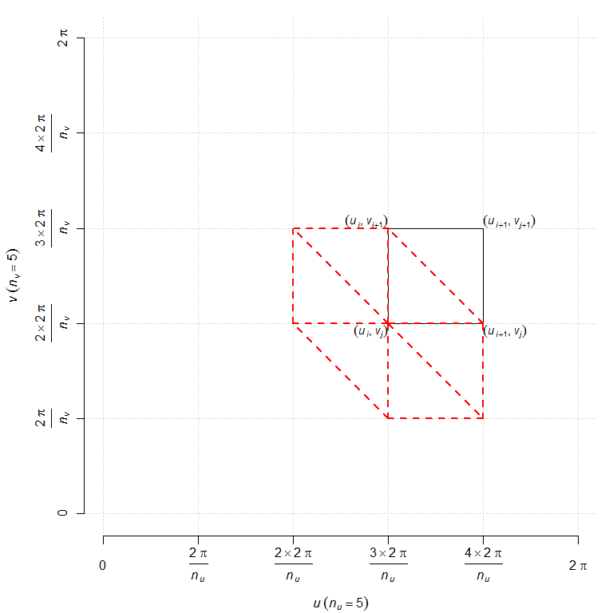
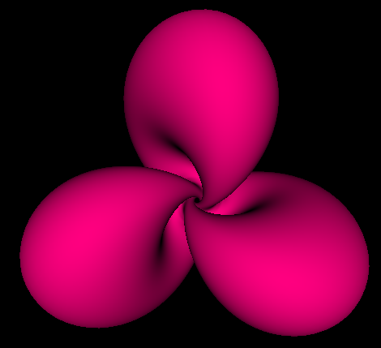

Parametric surface in Haskell OpenGL, with surface normals
Similarly to a previous post, I will show here how to draw a parametric surface with the Haskell OpenGL library, but this time we will include the surface normal at each vertex.
As the example of a surface, I take the stereographic projection of a Hopf torus. The parameterization is given by the function defined as follows in Haskell:
type Point = (Double, Double, Double)
hopf :: Double -> Double -> Point
hopf v = (x1/(den-x4), x2/(den-x4), x3/(den-x4))
where
a = 0.44
nlobes = 3
a1 = pi/2 - (pi/2-a) * cos(u*nlobes)
a2 = u + a*sin(2*u*nlobes)
sina1 = sin a1
p1 = cos a1
p2 = sina1 * cos a2
p3 = sina1 * sin a2
cosphi = cos v
sinphi = sin v
x1 = cosphi*p3 + sinphi*p2
x2 = cosphi*p2 - sinphi*p3
x3 = sinphi * (1+p1)
x4 = cosphi * (1+p1)
den = sqrt(2*(1+p1))for \(0 \leq u < 2\pi\) and \(0 \leq v < 2\pi\).
We will evaluate this function at the vertices of a grid like the one shown below (we will see later why we show the six red triangles on this picture):

We write a function that evaluates the values of a parametrization at the point of this grid and put them in an array:
import Data.Array (Array, (!), array)
import qualified Data.Array as A
frac :: Int -> Int -> Double
frac p q = realToFrac p / realToFrac q
allVertices :: (Double -> Double -> Point) -> (Int,Int) -> Array (Int,Int) Point
allVertices f (n_u, n_v) = array ((0,0), (n_u-1,n_v-1)) associations
where
u_ = [2*pi * frac i n_u | i <- [0 .. n_u-1]]
v_ = [2*pi * frac i n_v | i <- [0 .. n_v-1]]
indices = [(i,j) | i <- [0 .. n_u-1], j <- [0 .. n_v-1]]
g (i,j) = ((i,j), f (u_ !! i) (v_ !! j))
associations = map g indicesThese values are the surface vertices. Now, we write a function that approximates the surface normal at vertex \((i,j)\). This normal approximately is the average of the normals of the six triangles incident to the vertex.
type Vector = (Double, Double, Double)
triangleNormal :: (Point, Point, Point) -> Vector
triangleNormal ((x1,x2,x3), (y1,y2,y3), (z1,z2,z3)) = (a/norm, b/norm, c/norm)
where
(a, b, c) = crossProd (z1-x1, z2-x2, z3-x3) (y1-x1, y2-x2, y3-x3)
crossProd (a1,a2,a3) (b1,b2,b3) = (a2*b3-a3*b2, a3*b1-a1*b3, a1*b2-a2*b1)
norm = sqrt(a*a + b*b + c*c)
averageNormals :: Vector -> Vector -> Vector -> Vector -> Vector -> Vector -> Vector
averageNormals (x1,y1,z1) (x2,y2,z2) (x3,y3,z3) (x4,y4,z4) (x5,y5,z5) (x6,y6,z6) =
((x1+x2+x3+x4+x5+x6)/6, (y1+y2+y3+y4+y5+y6)/6, (z1+z2+z3+z4+z5+z6)/6)
normal_ij :: Array (Int,Int) Point -> (Int, Int) -> Vector
normal_ij vertices (i,j) = averageNormals n1 n2 n3 n4 n5 n6
where
((_,_), (n_u',n_v')) = A.bounds vertices
im1 = if i==0 then n_u' else i-1
ip1 = if i==n_u' then 0 else i+1
jm1 = if j==0 then n_v' else j-1
jp1 = if j==n_v' then 0 else j+1
n1 = triangleNormal (vertices ! (i,j), vertices ! (i,jp1), vertices ! (ip1,j))
n2 = triangleNormal (vertices ! (i,j), vertices ! (ip1,jm1), vertices ! (i,jm1))
n3 = triangleNormal (vertices ! (i,j), vertices ! (im1,j), vertices ! (im1,jp1))
n4 = triangleNormal (vertices ! (i,j), vertices ! (ip1,j), vertices ! (ip1,jm1))
n5 = triangleNormal (vertices ! (i,j), vertices ! (i,jm1), vertices ! (im1,j))
n6 = triangleNormal (vertices ! (i,j), vertices ! (im1,jp1), vertices ! (i,jp1))Now we write a function that takes the array of surface vertices as input and returns an array containing the surface normals:
allNormals :: Array (Int,Int) Point -> Array (Int,Int) Vector
allNormals vertices = array bounds associations
where
bounds = A.bounds vertices
indices = A.indices vertices
associations = map (\(i,j) -> ((i,j), normal_ij vertices (i,j))) indicesLet’s say that a surface triangle whose each vertex is attached to the
corresponding surface normal is a n-triangle. To each vertex \((i,j)\), we associate two n-triangles: the lower n-triangle for vertices \((i,j)\)-\((i+1,j)\)-\((i,j+1)\) and the upper n-triangle for vertices \((i+1,j+1)\)-\((i,j+1)\)-\((i+1,j)\). We write a function that takes as input the two arrays (vertices and normals), an index \((i,j)\), and that returns the two n-triangles:
import Graphics.Rendering.OpenGL.GL (Normal3 (..), Vertex3 (..))
type NPoint = (Vertex3 Double, Normal3 Double)
type NTriangle = (NPoint, NPoint, NPoint)
pointToVertex3 :: Point -> Vertex3 Double
pointToVertex3 (x,y,z) = Vertex3 x y z
vectorToNormal3 :: Vector -> Normal3 Double
vectorToNormal3 (x,y,z) = Normal3 x y z
triangles_ij :: Array (Int,Int) Point -> Array (Int,Int) Vector
-> (Int, Int) -> (Int, Int)
-> (NTriangle, NTriangle)
triangles_ij vertices normals (n_u,n_v) (i,j) =
(((a,na), (b,nb), (c,nc)), ((c,nc), (b,nb), (d,nd)))
where
ip1 = if i==n_u-1 then 0 else i+1
jp1 = if j==n_v-1 then 0 else j+1
a = pointToVertex3 $ vertices ! (i,j)
na = vectorToNormal3 $ normals ! (i,j)
c = pointToVertex3 $ vertices ! (i,jp1)
nc = vectorToNormal3 $ normals ! (i,jp1)
d = pointToVertex3 $ vertices ! (ip1,jp1)
nd = vectorToNormal3 $ normals ! (ip1,jp1)
b = pointToVertex3 $ vertices ! (ip1,j)
nb = vectorToNormal3 $ normals ! (ip1,j)Finally, we write a function returning the list of all pairs of n-triangles:
allTriangles :: (Int,Int) -> [(NTriangle,NTriangle)]
allTriangles (n_u,n_v) =
map (triangles_ij vertices normals (n_u,n_v)) indices
where
vertices = allVertices hopf (n_u,n_v)
normals = allNormals vertices
indices = [(i,j) | i <- [0 .. n_u-1], j <- [0 .. n_v-1]]Done. It remains to write the OpenGL side:
import Data.IORef
import Graphics.Rendering.OpenGL.GL
import Graphics.UI.GLUT
hopfTorus :: [(NTriangle,NTriangle)]
hopfTorus = allTriangles (400,400)
data Context = Context
{
contextRot1 :: IORef GLfloat
, contextRot2 :: IORef GLfloat
, contextRot3 :: IORef GLfloat
, contextTriangles :: IORef [(NTriangle,NTriangle)]
}
white,black,pink :: Color4 GLfloat
white = Color4 1 1 1 1
black = Color4 0 0 0 1
pink = Color4 1 0 0.5 1
display :: Context -> IORef GLdouble -> DisplayCallback
display context zoom alpha = do
clear [ColorBuffer, DepthBuffer]
r1 <- get (contextRot1 context)
r2 <- get (contextRot2 context)
r3 <- get (contextRot3 context)
ntriangles <- get (contextTriangles context)
let ntriangles' = unzip ntriangles
lowerTriangles = fst ntriangles'
upperTriangles = snd ntriangles'
z <- get zoom
loadIdentity
(_, size) <- get viewport
resize z size
rotate r1 $ Vector3 1 0 0
rotate r2 $ Vector3 0 1 0
rotate r3 $ Vector3 0 0 1
renderPrimitive Triangles $ mapM_ drawTriangle lowerTriangles
renderPrimitive Triangles $ mapM_ drawTriangle lowerTriangles
swapBuffers
where
drawTriangle ((v1,n1),(v2,n2),(v3,n3)) = do
materialDiffuse Front $= pink
normal n1
vertex v1
normal n2
vertex v2
normal n3
vertex v3
resize :: GLdouble -> Size -> IO ()
resize zoom s@(Size w h) = do
viewport $= (Position 0 0, s)
matrixMode $= Projection
loadIdentity
perspective 45.0 (realToFrac w / realToFrac h) 1.0 100.0
lookAt (Vertex3 0 0 (24+zoom)) (Vertex3 0 0 0) (Vector3 0 1 0)
matrixMode $= Modelview 0
keyboard :: IORef GLfloat -> IORef GLfloat -> IORef GLfloat -- rotations
-> IORef GLdouble -- zoom
-> IORef [(NTriangle,NTriangle)]
-> KeyboardCallback
keyboard rot1 rot2 rot3 zoom triangles c _ = do
case c of
'e' -> rot1 $~! subtract 2
'r' -> rot1 $~! (+2)
't' -> rot2 $~! subtract 2
'y' -> rot2 $~! (+2)
'u' -> rot3 $~! subtract 2
'i' -> rot3 $~! (+2)
'm' -> zoom $~! (+0.1)
'l' -> zoom $~! subtract 0.1
'q' -> leaveMainLoop
_ -> return ()
postRedisplay Nothing
main :: IO ()
main = do
_ <- getArgsAndInitialize
_ <- createWindow "Hopf torus"
windowSize $= Size 500 500
initialDisplayMode $= [RGBAMode, DoubleBuffered, WithDepthBuffer]
clearColor $= black
materialAmbient Front $= black
lighting $= Enabled
light (Light 0) $= Enabled
position (Light 0) $= Vertex4 0 0 (-1000) 1
ambient (Light 0) $= white
diffuse (Light 0) $= white
specular (Light 0) $= white
depthFunc $= Just Less
shadeModel $= Smooth
rot1 <- newIORef 0.0
rot2 <- newIORef 0.0
rot3 <- newIORef 0.0
zoom <- newIORef 0.0
nlobes' <- newIORef nlobes
hopfTorus' <- newIORef hopfTorus
displayCallback $= display Context {contextRot1 = rot1,
contextRot2 = rot2,
contextRot3 = rot3,
contextTriangles = hopfTorus'}
zoom
reshapeCallback $= Just (resize 0)
keyboardCallback $= Just (keyboard rot1 rot2 rot3 zoom hopfTorus')
idleCallback $= Nothing
putStrLn "*** Hopf torus ***\n\
\ To quit, press q.\n\
\ Scene rotation: e, r, t, y, u, i\n\
\ Zoom: l, m\n\
\"
mainLoopAnd this is the result:

The full code is available in this Github repo.